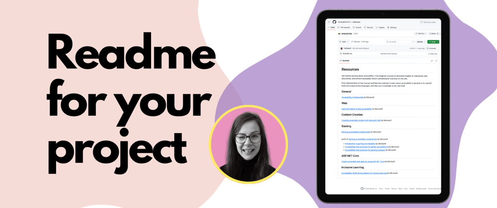
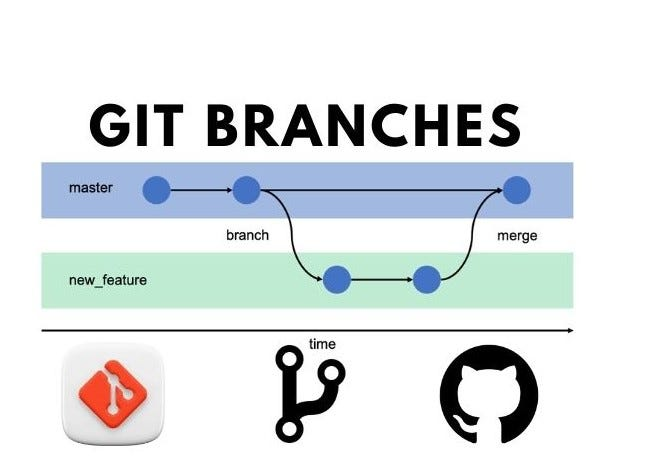

What is the purpose of a Wireframe ?
Wireframes help product organizations both visually communicate and document their plans for developing products or sites. It can help ensure the entire cross-functional team is on the same page in terms of strategic goals before beginning development work.
Here are a few examples of what wireframes can do for an organization:
- Communicate the team’s decisions about which functionality and content to prioritize in the product or site.
- Depict how the team envisions users to interact with the product or site.
- Document and communicate how various aspects of the app or website will connect.
- Establish consistent ways of displaying particular content across the site.
- Clarify for stakeholders across the company the product team’s plans for the product and the user experience.(This is why wireframes can serve as a helpful complement to the product roadmap in executive stakeholder meetings.)
Read more

What is the purpose of a Readme File ?
A README is a text file that introduces and explains a project. It contains information that is commonly required to understand what the project is about.It can be created but not limited to for :
- Introduction and Overview - The README introduces the project by providing its purpose, functionality, and objectives.It explains what the project does, who it is for, and any high-level information a user or contributor needs to know.
- Installation and Setup Instructions - Guides users on how to install, configure, and run the project on their system. It simplifies onboarding for new users and reduces the barriers to entry.
- Usage Guidance - Provides clear instructions on how to use the project or software.
- Contribution Guidelines - Encourages and guides others on how to contribute to the project. Outlines the standards and practices for making contributions to maintain quality and consistency.
- Licensing and Acknowledgements - Clearly defines the licensing terms under which the project is shared.Recognizes contributors, third-party libraries, or frameworks used in the project.
- FAQs - Address common questions or issues.
- Roadmap - Outline planned features or updates.
- Changelog - Track updates and changes in different versions.
Read more

What is a branch in Git?
A branch in Git is essentially a separate line of development within a repository. It allows developers to work on different tasks, features, or bug fixes in isolation from the main codebase. Branches enable parallel development and experimentation without affecting the stable version of the project. Some benefits of creating a branch are :
- Isolation of Work: Branches allow you to work on specific features or bug fixes without interfering with the main codebase.
- Parallel Development: Multiple team members can work on different branches simultaneously, enabling efficient collaboration.
- Safe Experimentation:You can use branches to test new ideas or features without risking the stability of the main project.
- Structured Code Review: Developers can create branches, make changes, and submit them for peer reviews before merging into the main branch.
- Version Control:Branches help maintain a clear project history, allowing you to track changes and manage different versions of the software.
Read more